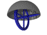

Gyroscopically stabilized weapons resist the recoil generated by the firing of a projectile. This increases accuracy (especially for automatic weapons) because the second and subsequent shots in a burst would otherwise drift upwards due to muzzle climb. The disadvantage of gyroscopically stabilized weapons is that they require more time to aim. The gyro opposes all changes in orientation, due to recoil or otherwise, and the weapon must be muscled into position to take the first shot.

Xenium is a magical metal found on Kulthea with the
property of negating gravity. Gravitons (the fundamental particle of
gravity) cannot penetrate Xenium. If a gyroscope is shielded with
Xenium it has no mass, and therefore has no inertia. The gyro is still
spinning and will regain its normal inertia if the Xenium shielding
is removed. The selective gyroscope consists of a high speed gyro
encased within a hollow sphere of Xenium. The plates of the sphere are
hinged and can be quickly moved out of the way by small servo motors.
The gyro is hooked to the weapon's control system and draws its power
from the weapon's energy cell.
The gyro will be mounted in a housing attached
as close as possible to the center of mass of the weapon (usually just
in front of the trigger guard). Typically the gyro's control system is
programmed to retract the Xenium shields as the trigger is pulled,
just before the round is fired. The gyro negates half of the penalty
for the second shot in a double-shot action (to -15, from the normal
-30), and reduces the penalty for an aimed burst action (to -15, from
the normal -20).
Other control programs are possible: A sniper rifle might
be set to retract the Xenium shields when the finger is placed on the
trigger so that an aimed shot can be made more accurately. This would
add +10 to aimed shots but -10 for non-aimed shots. A sudden change of
target or opportunity shot would suffer an additional -10 penalty
(total -20) due to the difficulty of moving the weapon with the gyro
active.
Weight: weightless
Spells used: N/A
Time to enchant: N/A
Copyright 1998-1999 Denton Gentry
Note: the animated GIF image on this page was produced using POV-Ray, a free raytracer available on the Internet. The Power Macintosh version of POV-Ray was used. The source file which generated the image is also available. The POV source file is free for derivative use.
Note(1): BTW, this really wouldn't work. Anything encased in Xenium is
weightless, but not massless. Consider a skyship of Eidolon as
an example: When sailing in water at full mass the ship has a certain
inertia X (where inertia is mass times velocity). As the ship lowered
its Xenium shields if its mass were approaching 0, for inertia to be
conserved its velocity would have to approach infinity. Thus, the skyship
would be quickly propelled out of the Kulthean star system at faster and
faster speed until it reached 3x10^8 km/sec, the speed of light in
vacuum. At that point the ship's mass would be converted to energy, but
since it would have no mass at that point the Universe would get very
confused. The Universe gets cross when it gets confused, and we don't want
that now do we?
Even though the physics don't work, its such a neat gadget
I'm leaving it on the web page anyway.